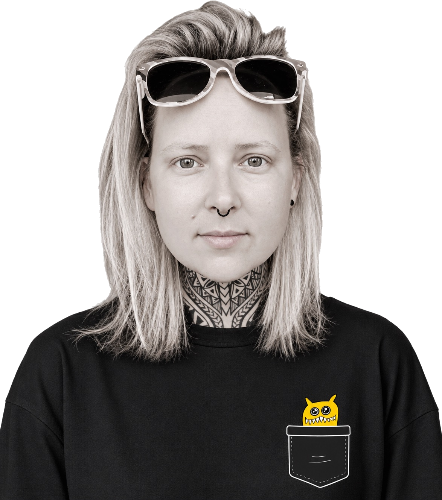
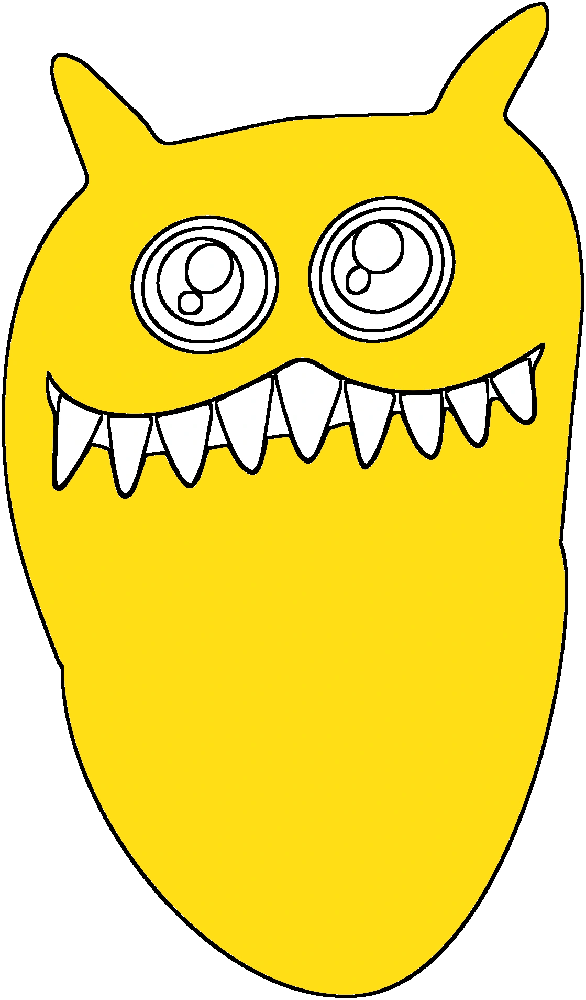
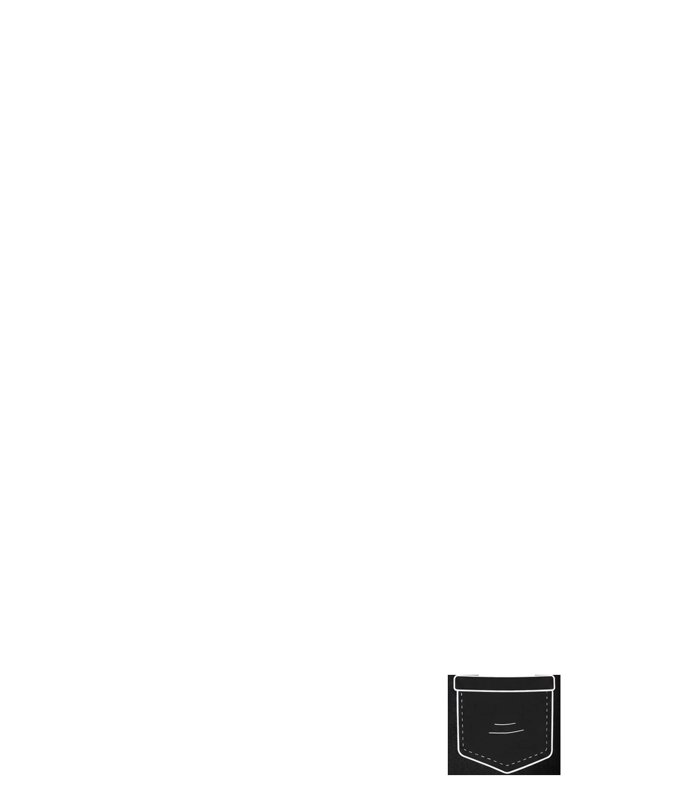

15+
years’ experience
across healthcare,
retail and technology





Design professional with 15+ years' experience solving business problems through branding, digital products and visual communication across healthcare, retail and technology.
I combine design, systems thinking and process improvement to simplify complexity and create customer-focused solutions that deliver measurable business value.
15+
years’ experience
across healthcare,
retail and technology
500+
Independent pharmacies
supported
8
brands & businesses
managed across a
fast-paced, shared
services environment
AI
as a bridge
between human
creativity and smarter
solutions
Some days
I amaze myself.Other days
I put my keys in the
fridge.
2020 – Present
Provide strategic creative support across multiple healthcare, retail and technology businesses within the NAVI Group, balancing competing priorities while maintaining consistent brand standards and delivering commercially focused design solutions.
2018 – 2020
2016 – 2018
Freelance
Worked directly with business owners to understand their goals before developing brands and visual communication that supported their business. The freedom to work closely with clients allowed me to challenge ideas, simplify complexity and create practical design solutions rather than simply responding to a brief.
Bachelor of Design (Honours)
2005–2009
AI doesn't replace good design - it amplifies good thinking. I use it to research, challenge assumptions, organise information, accelerate production and bridge the gap between business problems and creative solutions. The thinking, judgement and decisions remain human.